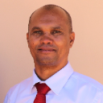

Jose Lopes | WDD 130
Hello! My name is Jose Lopes and I am from Cape Verde. I enjoy coding, web development, and exploring new technologies. I’m working toward a career that combines cybersecurity and data analysis, helping organizations protect their information and make smarter decisions through data. Through my studies in Software Development, I’ve built strong skills in programming, databases, and system logic. I enjoy solving problems, learning new tools, and working with data in meaningful ways. My goal is to contribute to a team where I can secure digital systems and turn complex data into clear, useful insights. This is my first WDD130 course homepage!